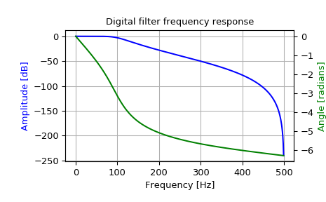

scipy.signal.freqz_zpk¶
-
scipy.signal.freqz_zpk(z, p, k, worN=512, whole=False, fs=6.283185307179586)[source]¶ Compute the frequency response of a digital filter in ZPK form.
Given the Zeros, Poles and Gain of a digital filter, compute its frequency response:
\(H(z)=k \prod_i (z - Z[i]) / \prod_j (z - P[j])\)
where \(k\) is the gain, \(Z\) are the zeros and \(P\) are the poles.
- Parameters
- zarray_like
Zeroes of a linear filter
- parray_like
Poles of a linear filter
- kscalar
Gain of a linear filter
- worN{None, int, array_like}, optional
If a single integer, then compute at that many frequencies (default is N=512).
If an array_like, compute the response at the frequencies given. These are in the same units as fs.
- wholebool, optional
Normally, frequencies are computed from 0 to the Nyquist frequency, fs/2 (upper-half of unit-circle). If whole is True, compute frequencies from 0 to fs. Ignored if w is array_like.
- fsfloat, optional
The sampling frequency of the digital system. Defaults to 2*pi radians/sample (so w is from 0 to pi).
New in version 1.2.0.
- Returns
- wndarray
The frequencies at which h was computed, in the same units as fs. By default, w is normalized to the range [0, pi) (radians/sample).
- hndarray
The frequency response, as complex numbers.
See also
Notes
New in version 0.19.0.
Examples
Design a 4th-order digital Butterworth filter with cut-off of 100 Hz in a system with sample rate of 1000 Hz, and plot the frequency response:
>>> from scipy import signal >>> z, p, k = signal.butter(4, 100, output='zpk', fs=1000) >>> w, h = signal.freqz_zpk(z, p, k, fs=1000)
>>> import matplotlib.pyplot as plt >>> fig = plt.figure() >>> ax1 = fig.add_subplot(1, 1, 1) >>> ax1.set_title('Digital filter frequency response')
>>> ax1.plot(w, 20 * np.log10(abs(h)), 'b') >>> ax1.set_ylabel('Amplitude [dB]', color='b') >>> ax1.set_xlabel('Frequency [Hz]') >>> ax1.grid()
>>> ax2 = ax1.twinx() >>> angles = np.unwrap(np.angle(h)) >>> ax2.plot(w, angles, 'g') >>> ax2.set_ylabel('Angle [radians]', color='g')
>>> plt.axis('tight') >>> plt.show()
